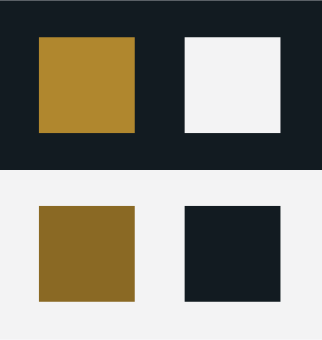

Independent work
Beaches Wellness Centre
2021
Project Summary
Beaches Wellness Centre is a well-established chiropractic and registered massage therapy clinic in Toronto’s Beaches neighbourhood. As one of their patients, I went to leave a voicemail for them one day, but first wanted to double-check their hours to make sure I wouldn’t be bothering them right at the end of the day... and discovered they didn’t have a web site.
Since I needed portfolio work I could show in public without violating my employer’s security regulations, I asked if I could make a web site for them, and they agreed.
The Challenge
After some discussions, the proposed site’s goals were determined:
- Feasible: the site must be low-cost to create and maintain.
- Accessible: although the business does not fall under AODA regulations, it made sense to implement WCAG 2.1 AA accessibility for a brand-new site.
- Ease of content management: After initial implementation, the clinic wanted to be able to update the site themselves.
- Responsive: The design had to be mobile-first, but also support tablet and larger-screen visits.
A brief was created which listed the project goals, constraints, major deliverables, and other major details.
Overarching constraint: COVID placed a lot of restrictions on physical space and time. The clinic’s waiting room was shut down; patients had to wait outside the building before their appointments. The clinic’s volumes also went up, so time to meet with the stakeholders was minimal. It wasn’t unusual for the clinic owner and I to talk about next steps during my appointment, simply because it was the only time we had to discuss anything with each other.
Research
Research focused on three topics:
- Competition: what do the websites of the other clinics in the neighbourhood look like? what content do they have?
- Existing patients: what do the existing patients want in a website? What would they find useful? (Note that nearly all clinic patients are referred by word of mouth, so existing patients are considered the primary audience for a site.)
- Information architecture: in what order should the website provide the content? How should information be grouped? What are the major content topics?
I created a competitive analysis of 13 different clinics, mostly from the neighbourhood, a few in adjacent communities. The analysis noted the purpose of the site, the colour scheme, the main menu items, the core content, what services are offered, and whether or not the site had been updated recently.
Chiropractors are not allowed to compete against each other directly (ie: they can’t say anything like, “Best in Toronto!”), so it was important to find out how to stand out in a way that complied with professional standards.
The analysis revealed that there were two major ways to both stand out as a website and to comply with the standards:
- Choose a colour scheme which wasn’t the same as the other sites, which tended to draw from a limited set of pallettes
- Order the information in a way that appealed to patients
I then did a card sort with patient volunteer participants, to determine which menu items were most important to them.
Existing patients: I decided to take advantage of the restrictions COVID had placed on patient access, and use the time waiting outside for appointments to talk to other patients informally and learn what they expected from a website. Sometimes we would look at competition websites together as well.
Information architecture: I used Optimal Workshop (external link) to create a card sorting exercise, based on the most popular menu items revealed in the competitive analysis and topics patients had mentioned. Patients were invited to complete it, and to share the link if they wanted. This gave me enough data to determine the major content for the website, and in how it should be organized.
Having established a creative brief and conducted user research in the first phase of the project, I still needed to research UI elements before I started sketching mock-ups.
Colour scheme: the competitive analysis from the Research phase showed that most competing local sites used blues, greens, oranges, or greys as their major colours. The stakeholders and I both searched independently for inspirational sites to get ideas for a colour scheme, and both of us brought forward different sites with a black & slightly off-white colour scheme with dark gold accents.

Navigation elements: the two menu options for mobile were a hamburger menu, or a button bar at the bottom of the screen. The stakeholders and I agreed to conduct A/B testing to determine which was best.
User Needs and Pain Points
- They didn’t like having to scroll through multiple screens’ worth of therapy descriptions just to find out a clinic’s office hours or contact information.
- It was too difficult to find out the clinic address. Many existing patients only visit once every several months and so don’t have the location memorized.
- Patients weren’t confident they would understand therapy descriptions from a website, and were more comfortable simply discussing them with someone at the clinic on the phone or during an appointment.
Design Decisions
- It confirmed that mobile-first was the best way to go — many patients just assumed they would be using their phone to access the site, and that they would be using the site en route to an appointment, or when they were otherwise not at home.
- Patients strongly preferred a one-page layout, so they could thumb-scroll over using links or another navigation method. If they clicked to another page on a sample site, they would try to scroll back to home rather than clicking on the Home link in the menu.
- Each screen’s worth of information should be tightly-focused and kept to a minimum. Patients didn’t like a lot of content on a screen at once.
By focusing on the data and the research results, very little elements were left up for discussion. Most choices can be traced back to the user research, competitive analysis, and the original brief from the stakeholders.
- Key information for the home page was identified during the interviews.
- The results of the card sorting exercise are used to drive the content organization.
Design Process
- Organized content according to the card sort results
- Created mini design system using Rangle.io Radius template; create responsive grid
- Collected assets
- Developed responsive wireframes (mobile → tablet → desktop)
- Addressed accessibility (WCAG 2.1 AA) and color contrast challenges
- A/B tested navigation options (hamburger vs button bar)
After a few initial review rounds with the stakeholders, two versions of the interactive wireframes were tested with patients:
- Hamburger menu: the traditional hamburger menu was shown at the top of the mobile view, with a menu drawer which appeared when the visitor tapped the hamburger icon.
- Button bar: a button bar was added to the bottom of the mobile screen, with only the major sections (Home, News, About) shown as buttons.
I made a temporary “secret” link on each version of the home page so that testers could switch between the hamburger menu and button bar solutions easily, showed the vistors how to switch between the two solutions, and asked them to find different sections. The testers also read through the wireframes while chatting with me informally (essentially guerilla testing).
Solution
The prototype was tested on multiple screens with Wellness Centre staff and patients.
Gold text is tricky to implement because it’s in the medium range for hex values and it can be challenging to find sufficient contrast to meet WCAG 2.1 AA standards. This was mitigated by using slightly different shades of gold against the black and white backgrounds to ensure each background had sufficient contrast.
The About section has three subsections, which makes it the longest section. Research indicated it would also be the least-visited part of the site. Therefore, to keep the menu short and simple, the subsections were removed from the main menu. Links at the top of each About subsection allow vistors to navigate quickly within the main section.

Outcome
The final design solution incorporated feedback from the testing phase and addressed the identified issues. Key features included:
- A responsive layout that adapts to different screen sizes
- Clear navigation options that prioritize user needs
- Accessible design elements that meet WCAG 2.1 AA standards
- Flexible sections which allowed for easy editing (holiday hours, event messaging)
The design was approved by the client, but they chose not to incoporate it because they already had more patients than they could handle.
Reflections
The conventional wisdom is to sell a small business by showing the products and services available, and then list the contact information/book an appointment as a call to action. The patients I interviewed preferred to find out the contact information and location first, and then contact the clinic to determine if the services fit their needs.
It was noted in the brief that minimal content was preferred by the stakeholders, but the patient interviews indicated content and layout should be even more minimal than previously supposed. Rather than read about the available services on a website, patients reported they would rather have a discussion about it in the context of their personal state of health.
There were never really any major showstoppers in the process because the business owner and other business stakeholders were kept informed throughout the process. The only time I did an experiment on my own was when I redesigned the home page, and even then the feedback loop was strong enough that they were able to choose from the samples I made quickly so we could move on to evaluating the update with guerilla testing.
Using the Radius mini-design system let the stakeholders and I build up a set of design conventions which complied with accessibility standards very quickly and easily.
The interactive wireframes are available on Figma in three screen widths: